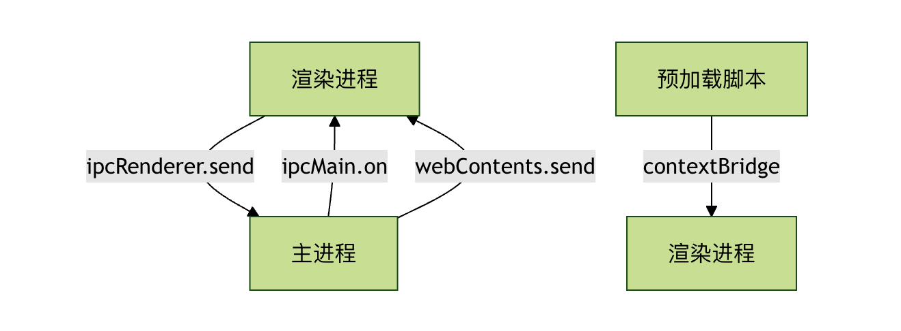

Electron architecture
You can think of Electron as:
A multi-process application container with a built-in browser engine (Chromium) and a Node.js runtime，
Desktop applications that combine "web pages + system capabilities" by coordinating through inter-process communication (IPC).
Its core components are:
| Role | Description | Analogy |
|---|---|---|
| Main Process (main process) | Electron's brain, controlling the application lifecycle, creating windows, and calling system APIs | OS Process Manager |
| Renderer Process | The web page environment (HTML, CSS, JS) run by each window | Browser Tab |
| Preload Script | Runs before rendering, can bridge main process APIs for use by web pages | Security "Middle Layer" |
| IPC (inter-process communication) | Communication channel between the main process and renderer processes | telephone line |
| BrowserWindow object | The "window container" created by the main process, which loads web pages inside | Browser window |
| App Module | Controls the application lifecycle (startup, exit) | Master control |

Main Process
The main process is the "brain" of an Electron application; every Electron app has exactly one main process. It is responsible for:
- Create and manage application windows(Renderer Process)
- Handle application lifecycle(Startup, Exit, Foreground/Background Switching)
- Interact with operating system native APIs
- Manage system-level components such as menus and dialogs
Example
const { app, BrowserWindow } = require('electron');
function createWindow() {
// Create the browser window
const mainWindow = new BrowserWindow({
width: 800,
height: 600,
webPreferences: {
nodeIntegration: true,
contextIsolation: false
}
});
// Load the app's index.html
mainWindow.loadFile('index.html');
}
// Called when Electron completes initialization
app.whenReady().then(createWindow);
Renderer Process
The renderer process is responsible for displaying the user interface; each Electron window is an independent renderer process:
- Runs in the Chromium browser environment
- Use HTML, CSS, and JavaScript to build interfaces
- Each window is an independent process, and they do not affect each other
- Communicates with the main process via IPC
Example
<!DOCTYPE html>
<html>
<head>
<title>My Electron App</title>
</head>
<body>
<h1>Hello Electron!</h1>
<button id="btn">Click me</button>
<script>
// JavaScript in the renderer process
document.getElementById('btn').addEventListener('click', () => {
alert('The button was clicked!');
});
</script>
</body>
</html>
Preload Scripts
The preload script is the "bridge" connecting the main process and the renderer process:
- Runs before the webpage is loaded in the renderer process
- Has access to Node.js APIs and the DOM
- Safely expose APIs to the renderer process via contextBridge
Example
const { contextBridge, ipcRenderer } = require('electron');
// Expose a safe API to the renderer process
contextBridge.exposeInMainWorld('electronAPI', {
showDialog: (message) => ipcRenderer.invoke('show-dialog', message)
});
Inter-process communication (IPC)
IPC communication patterns
IPC（Inter-Process Communication）Is the communication core of Electron.
Since the main process and the renderer process are independent, data must be passed through IPC.

Communication Direction
| Type | Main process listening | Sent by the renderer process |
|---|---|---|
| Renderer → Main | ipcMain.on(channel, handler) |
ipcRenderer.send(channel, data) |
| Main → Renderer | event.sender.send(channel, data) |
ipcRenderer.on(channel, callback) |
Basic Communication Example
Main Process Code:
Example
// Listen for messages from the renderer process
ipcMain.handle('show-dialog', async (event, message) => {
const result = await dialog.showMessageBox({
type: 'info',
message: message,
buttons: ['OK', 'Cancel']
});
return result;
});
Renderer Process Code:
Example
document.getElementById('btn').addEventListener('click', async () => {
const result = await window.electronAPI.showDialog('Hello, Electron!');
console.log('User clicked:', result.response);
});
Architecture Advantages & Features
Advantage Comparison
| Features | Electron | Traditional Desktop Development |
|---|---|---|
| Development Technology | Web Technologies (HTML/CSS/JS) | Native languages (C++/C#/Java) |
| Cross-platform support | Develop Once, Run on Multiple Platforms | Requires separate development for each platform |
| Development Efficiency | High, leverages existing web ecosystem | Lower, requires learning platform-specific technologies |
| Performance | Relatively low, consumes more resources | High, Native Performance |
| Installer size | Large (includes Chromium) | the smaller |
Core Features
- Cross-Platform Consistency: The application looks and behaves consistently on all operating systems
- Leveraging the web ecosystem: Can directly use npm packages and Web frameworks
- Rapid Prototyping: Based on familiar Web technologies, short development cycle
- Rich APIs: Provides a complete API set for accessing system native features
Practical Application Examples
Let's create a simple file manager application to demonstrate the Electron architecture:
Main Process (main.js):
Example
const fs = require('fs').promises;
const path = require('path');
let mainWindow;
function createWindow() {
mainWindow = new BrowserWindow({
width: 1000,
height: 700,
webPreferences: {
preload: path.join(__dirname, 'preload.js'),
contextIsolation: true
}
});
mainWindow.loadFile('index.html');
}
// Handle file reading
ipcMain.handle('read-file', async (event, filePath) => {
try {
const content = await fs.readFile(filePath, 'utf-8');
return { success: true, content };
} catch (error) {
return { success: false, error: error.message };
}
});
// Handle file selection
ipcMain.handle('select-file', async () => {
const result = await dialog.showOpenDialog(mainWindow, {
properties: ['openFile'],
filters: [
{ name: 'Text File', extensions: ['txt', 'md', 'js', 'html', 'css'] }
]
});
return result;
});
app.whenReady().then(createWindow);
Preload script (preload.js):
Example
contextBridge.exposeInMainWorld('fileAPI', {
readFile: (filePath) => ipcRenderer.invoke('read-file', filePath),
selectFile: () => ipcRenderer.invoke('select-file')
});
Renderer process (index.html):
Example
<html>
<head>
<title>Simple file manager</title>
<style>
body { font-family: Arial, sans-serif; margin: 20px; }
.container { max-width: 800px; margin: 0 auto; }
button { padding: 10px 15px; margin: 5px; cursor: pointer; }
#content { border: 1px solid #ccc; padding: 15px; margin-top: 10px;
min-height: 300px; white-space: pre-wrap; }
</style>
</head>
<body>
<div class="container">
<h1>Simple file manager</h1>
<button id="selectBtn">Select File</button>
<button id="clearBtn">Clear Content</button>
<div>
<h3>File contents:</h3>
<div id="content">Please select a file...</div>
</div>
</div>
<script>
const selectBtn = document.getElementById('selectBtn');
const clearBtn = document.getElementById('clearBtn');
const contentDiv = document.getElementById('content');
selectBtn.addEventListener('click', async () => {
const result = await window.fileAPI.selectFile();
if (!result.canceled && result.filePaths.length > 0) {
const filePath = result.filePaths[0];
const fileResult = await window.fileAPI.readFile(filePath);
if (fileResult.success) {
contentDiv.textContent = `File path: ${filePath}\n\n${fileResult.content}`;
} else {
contentDiv.textContent = `Failed to read file: ${fileResult.error}`;
}
}
});
clearBtn.addEventListener('click', () => {
contentDiv.textContent = 'Please select a file...';
});
</script>
</body>
</html>
Other important modules (available in the main process)
| module name | Function |
|---|---|
app |
Control the application lifecycle (startup/exit) |
Menu / MenuItem |
Creating the Application Menu Bar |
Tray |
System Tray Icon |
Notification |
System Notification |
dialog |
Open File/Save Dialog |
shell |
Call the system default program to open files or URLs |
nativeImage |
Manipulate images (icons) |
clipboard |
Manipulating Clipboard Content |
powerMonitor |
Listen for system power events |
screen |
Get screen information (multi-monitor support) |
Security architecture and sandbox isolation
Since renderer processes can run web pages, to prevent malicious code from attacking the system, Electron implements the following security designs:
| Policy | Description |
|---|---|
| Disable NodeIntegration | Defaultfalse, avoiding web pages from directly calling system APIs. |
| Enable ContextIsolation | Make page scripts and Preload APIs run in an isolated context. |
| Preload + contextBridge | Clearly control the secure APIs exposed to the frontend. |
| Content Security Policy (CSP) | Restrict script sources to prevent XSS. |
| sandbox mode | Sandboxing can be enabled to completely isolate the renderer process. |
| Validate remote URLs | Untrusted remote content must undergo whitelist validation. |
Execution Flow (From Startup to Rendering)
1、启动应用 (electron .)
↓
2、执行 main.js（主进程启动）
↓
3、app.whenReady() 触发，创建 BrowserWindow
↓
4、BrowserWindow 启动新的渲染进程（Chromium 实例）
↓
5、preload.js 先执行（在隔离上下文中）
↓
6、index.html 加载并显示（运行前端框架）
↓
7、渲染进程通过 IPC 调用主进程逻辑
↓
8、主进程处理请求、返回结果
↓
9、用户关闭窗口 → 主进程监听 → app.quit()
Main-subordinate multi-window model (multi-process parallel)
- An Electron application always has onlyA main process；
- But can haveMultiple renderer processes (each window is independent)；
- Communication between them must go through the main process relay or use
ipcMain.handlePerform asynchronous bridging.
Schematic:
主进程 (Main) ├── 窗口1 → 渲染进程A (index.html) ├── 窗口2 → 渲染进程B (settings.html) └── 窗口3 → 渲染进程C (dashboard.html)
Electron internal core components (underlying dependencies)
| Tier | Technology |
|---|---|
| UI rendering layer | Chromium（Blink + V8） |
| System interface layer | Node.js（libuv + C++ bindings） |
| Process management layer | Electron Core (C++ + JavaScript) |
| Application logic layer | Your JS/TS code (Main + Renderer) |
other extensionsYour JS code runs in the Node environment encapsulated by Electron, while the rendering interface runs in the Chromium WebView.
Click Me to Share Notes
The note must be an extension of this article's content!
For article submission, click here
How to obtain the registration invitation code
Before sharing notes, you mustLog in！
How to obtain the registration invitation code